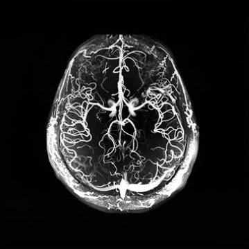
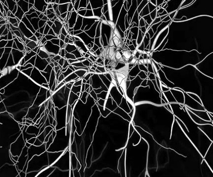
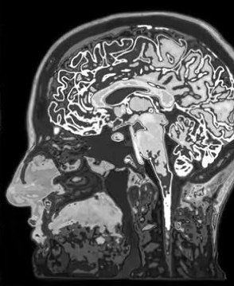
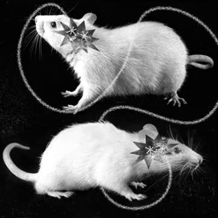
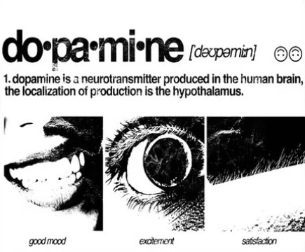
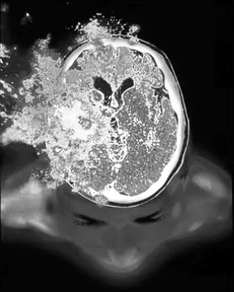

how to fix your dopamine


partial ↓
do·pa·mine /ˈdoʊ.pə.miːn/ noun
Your dopamine is a perp. Stop trading it at 50×.
- A neurotransmitter made mostly by a few hundred thousand neurons in the midbrain: the ventral tegmental area and the substantia nigra.
- It doesn't make you feel good. It makes you want, move and learn from surprise.
“the localization of production is the hypothalamus”partial The hypothalamus makes a small share, mostly to switch off prolactin. Motivation runs on the midbrain supply.
01 · Simulator
Trade a day of your own dopamine
Every habit opens a long on your dopamine. Cheap hits come with high leverage: a fast spike, then a crash below where you started, and a little more tolerance each time. Healthy ones trade at 1–3×. Try to end the day above baseline without getting liquidated.
Sleep closes every position and pays down most of your tolerance.
| Market | Lev. | Opened | Effect now | Phase |
|---|
Illustrative model built on opponent-process theory (Solomon & Corbit) and the pleasure–pain balance described by Anna Lembke. The shapes are realistic; the numbers are not measurements. The day opens with an example morning already loaded.
02 · Markets
Four pathways, four different jobs
“Dopamine” isn't one switch. The same molecule runs four separate routes in the brain, and each one fails in its own way.
| Pair | Route | Does | When it breaks |
|---|---|---|---|
| MESO-LIMBIC | VTA → nucleus accumbens | Wanting, craving, cue → reward learning | Addiction, compulsive scrolling, anhedonia |
| MESO-CORTICAL | VTA → prefrontal cortex | Focus, working memory, holding a plan | ADHD-like distractibility, flat motivation |
| NIGRO-STRIATAL | Substantia nigra → dorsal striatum | Starting and smoothing movement, habits | Parkinson's disease (60–80% of these neurons lost before symptoms) |
| TUBERO-INFUND. | Hypothalamus (arcuate) → pituitary | Keeps prolactin in check | High prolactin, a side effect of some antipsychotics |
03 · Signal lab
Dopamine fires on surprise, not on reward
In 1997 Wolfram Schultz showed that dopamine neurons encode reward prediction error: what you got minus what you expected. Run trials below. A cue appears, then juice arrives with probability p. As the brain learns, the burst moves from the juice to the cue.
- Expected (V)
- 0.00
- Last error (δ)
- —
- Trials
- 0
Try it: learn at 100%, and the reward-time burst fades to nothing because a certain reward is no news. Then drop to 0%: every missing reward now shows up as a dip.
04 · Risk management · the fix
Lower your leverage
You can't “fast” from a neurotransmitter, and you shouldn't want to. What works is lowering your leverage: fewer cheap spikes, more slow, earned ones, and enough sleep to reset tolerance. Tick off what you did today. It's saved in this browser only.
Fully exposed. Start with sunlight.